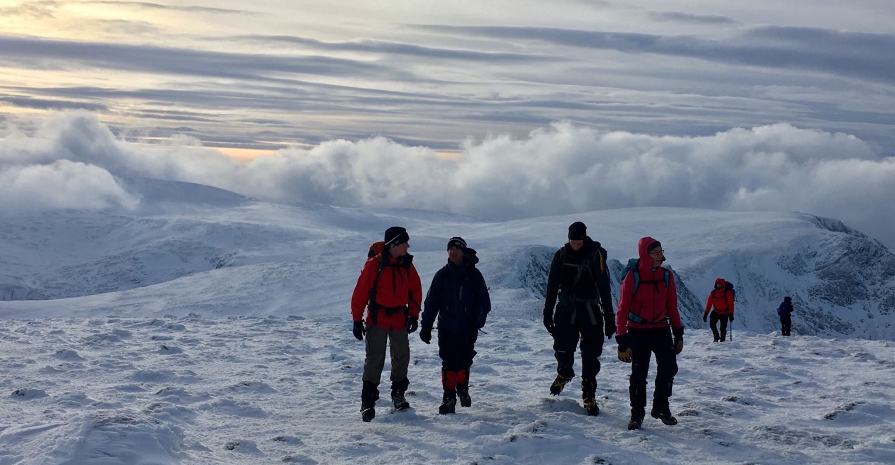
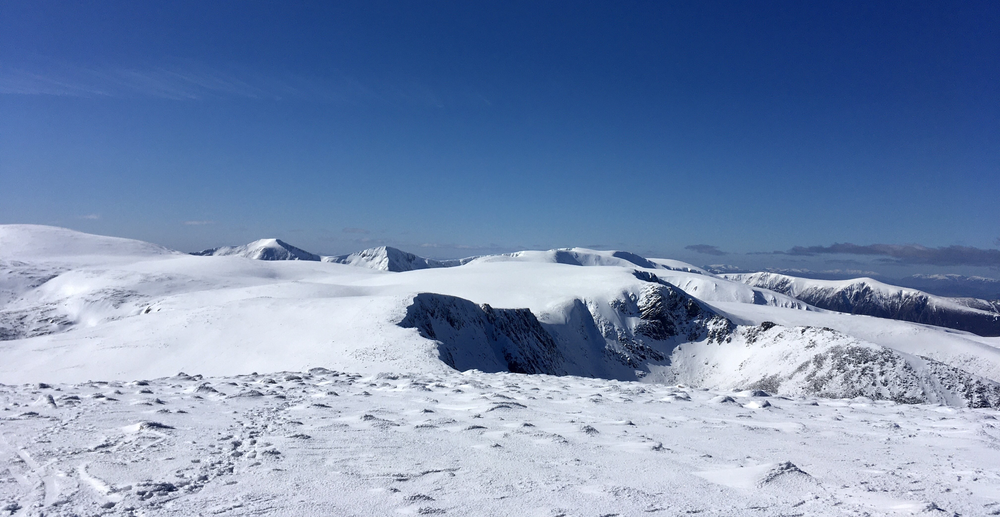
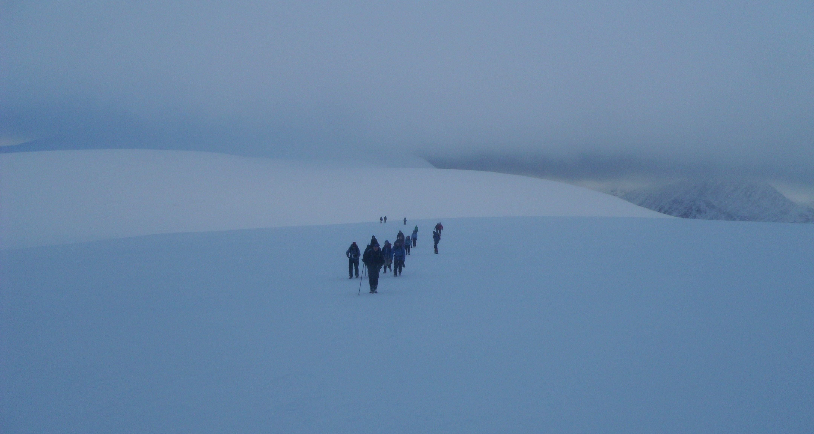
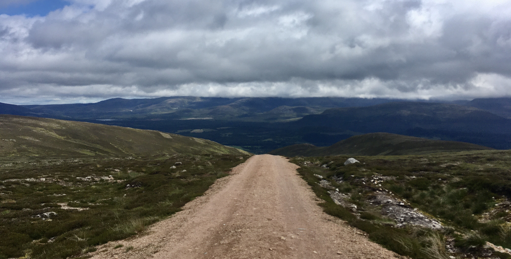
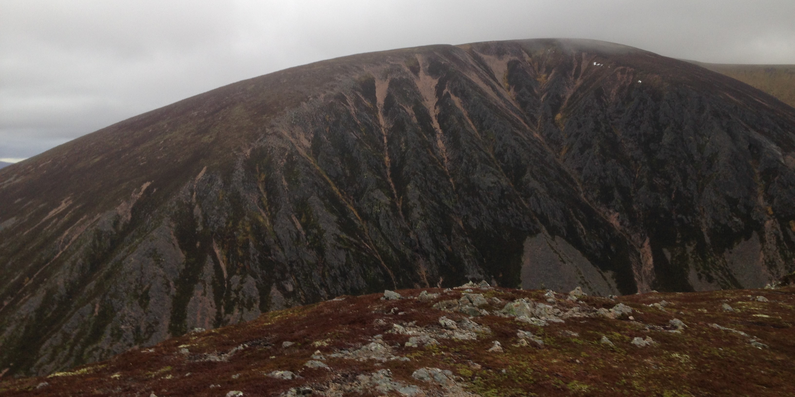

With transport
Routes requiring club transport
Cairn Gorm (via Fiacaill Ridge)

A short but challenging route up a Grade 1 summer scramble starting at the ski centre car park. If under time pressure, a descent can be made via Point 1141
- Difficulty: Medium / Hard
- Length: 9.2 km
- Ascent: 744 m
- Start: Ski Centre CP
- Description: Ski Centre CP → along the Allt Coire an t-Sneachda → Fiacaill Ridge → over Stob Coire an t-Sneachda → contour and summit Cairngorm → descend north to the top ski station → descend to CP via Sron an Aonaich.
Cairn Gorm (Northern Corries)

A traverse around the edge of the northern corries (Coire an t-Sneachda, Coire an Lochain), be aware of cornices!
- Difficulty: Medium
- Length: 11 km
- Ascent: 796 m
- Start: Ski Centre CP
- Description: Ski Centre CP → trend south-west towards Lurcher’s Crag → climb steeply to Cairn Lochan → ascend Stob Coire an t-Sneachda and follow the above described route.
Ben Macdhui

A journey to Britain’s second highest mountain. A full day out, especially if combined with Cairngorm. Strong navigation skills a requirement
- Difficulty: Medium / Hard
- Length: 15.8 km
- Ascent: 770 m
- Start: Ski Centre CP
- Description: Ski Centre CP → trend south-west towards Lurcher’s Crag → climb steeply to west of Cairn Lochan → bear south across the plateau to Ben Macdhui summit (trig point) → return via the outward route, or contour the northern corries and descend via Point 1141 or Cairngorm.
Sgòr Gaoith

One of the easier Munro’s in the area (alongside Cairn Gorm). Worth it for the views down into Gleann Eaniach, the summit perched above the cliffs
- Difficulty: Medium
- Length: 13.8 km
- Ascent: 839 m
- Start: Glen Feshie
- Description: Invereshie and Inshriach National Nature Reserve CP → follow the path south-east as it tracks above the Allt Ruadh → cross the Allt a’ Chrom-alltain → ascend east to Sgòr Gaoith → return via the outward route, or more ambitiously via Meall Buidhe and Geal-charn.
Braeriach

The third highest mountain in Britain. A remote summit and a long and challenging day, involving much ascent and re-ascent. Beautiful in the right conditions
- Difficulty: Hard
- Length: 21 km
- Ascent: 1050 m
- Start: Sugar Bowl CP
- Description: Sugar Bowl CP → Chalamain Gap → Lairig Ghru → Sron na Lairige → Braeriach summit → return via the outward route.
Geal-charn Mòr

A straightforward Corbett on the edge of Aviemore, climbed most simply via the Burma Road, supposedly constructed by prisoners of war during WWII.
- Difficulty: Easy / Medium
- Length: 10 km
- Ascent: 570 m
- Start: Lynwilg
- Description: Lynwilg (free parking at the start of the Burma Road) → Burma Road to bealach → Geal-charn Mòr → return via the outward route or descent via path on west flank of Creag Chleannain.
Craigellachie

A short but steep outing from Aviemore. A good choice in poor weather or if limited time available
- Difficulty: Easy
- Length: ~5 km
- Ascent: 300 m
- Start: Aviemore
- Description: Marked route - follow signs!
Mullach Clach a’ Bhlàir

An uninspiring Munro, but worth doing if no other alternatives are available. Limited topographic interest, but pleasant in Glen Feshie
- Difficulty: Medium
- Length: ~21 km
- Ascent: 750 m
- Start: Glen Feshie
- Description: Auchlean → south along Glen Feshie → ascend Coire Caol → south across plateau to non-descript summit → return via the outbound route.
Braeriach to Devil’s Point

A massive and memorable outing for Munro baggers, but only feasible with limited snow cover. Four Munros, remote walking, and a long slog back up the Lairig Ghru to finish
- Difficulty: Very Hard
- Length: 37 km
- Ascent: 2100 m
- Start: Sugar Bowl CP
- Description: Sugar Bowl CP → Chalamain Gap → Sron na Lairige → Braeriach summit → Sgòr an Lochain Uaine → Cairn Toul → Devil’s Point → Corrour Bothy → Lairig Ghru and the Pools of Dee → Chalamain Gap → Sugar Bowl CP.
A’ Chailleach

The closest and finest Munro in the rarely visted Monadhliath
- Difficulty: Easy / Medium
- Length: 10 km
- Ascent: 620 m
- Start: Glen Banchor above Newtonmore
- Description: Glen Banchor → along the Allt a’ Chaorainn → ascent the south flank of A’ Chailleach → return by the outbound route.
Ord Bàn

A short outing up a diminutive summit but superb views of the Cairngorms and the Monadhliath, and an excellent outing when combined with a circuit of Loch an Eilein. The Strava heatmap useful for path finding
- Difficulty: Easy
- Length: 7 km
- Ascent: 250 m
- Start: Loch an Eilein (parking charge applies)
- Description: Loch an Eilein CP → clockwise around the lake → take left fork at NH 8882 0740 → follow to deer fence → follow near side of deer fence north east (clear but small path) towards Ord Bàn summit, with one fence crossing → from summit, descent east on minor stalkers path to start